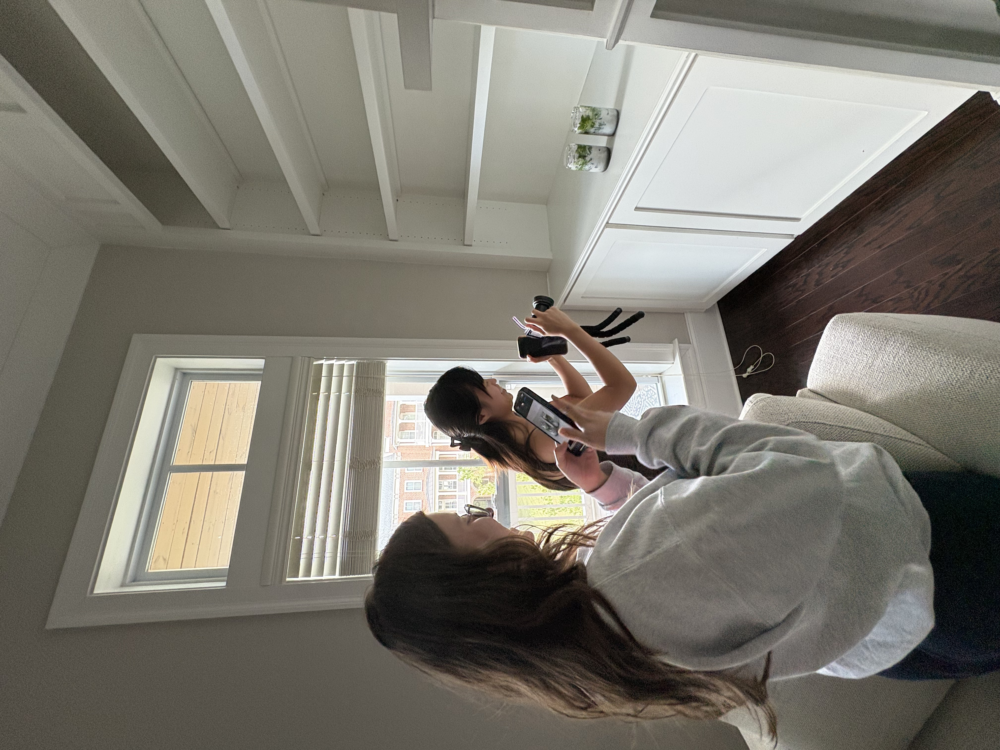
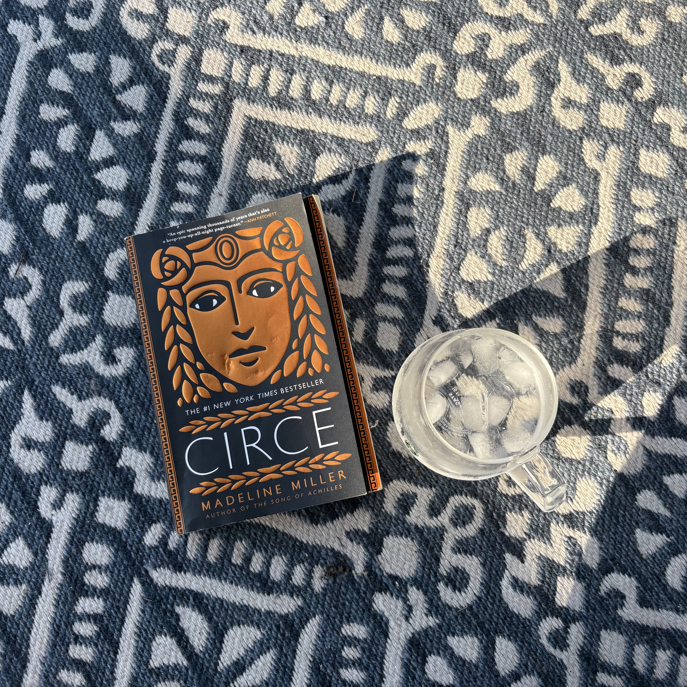

matcha experiments, documented accordingly.

favorite summer 2026 read!
When I'm not doing research, I'm usually making matcha, trying a new café, taking photos, dancing, or documenting little pieces of PhD life.
I love experimenting with matcha and espresso, finding cozy cafés, and collecting ideas for my own home cafe.
When I can, I love to practice using the right side of my brain. I enjoy polymer clay molding, painting, and writing. I always seem to find myself coming back to photography and video.
I've been experimenting with different ways to stay in shape. Some of my personal favorites are to lift some weights, dance, and go for walks.
Atlanta, Georgia
to learn how to cook...
Best Offer Wins by Marisa Kashino